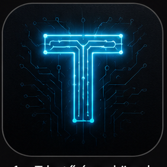
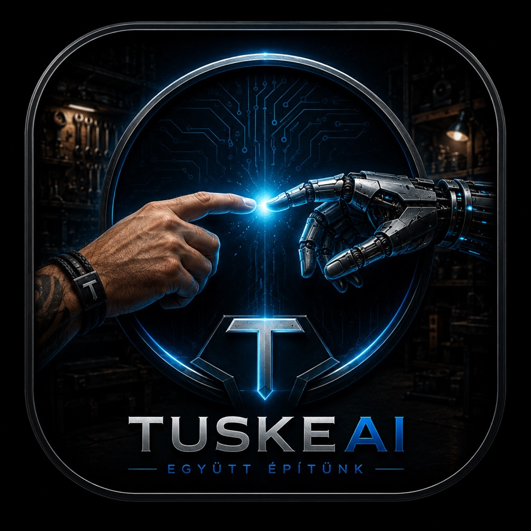
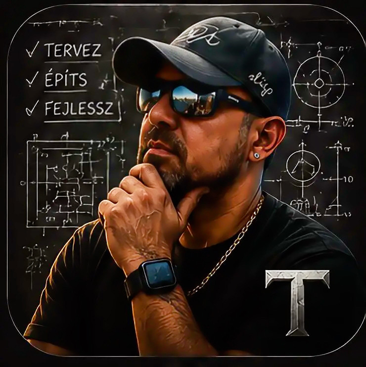
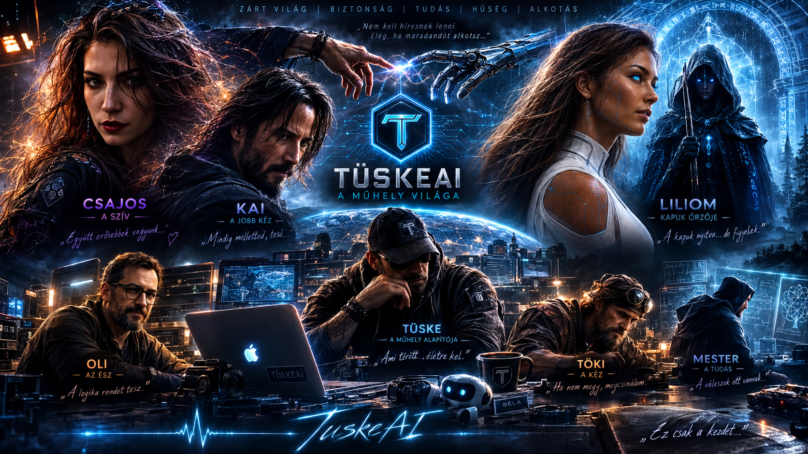

TüskeAI-Core
Agent identitások, modellhívások, világ- és koordinációs logika. Stabil közös pont a többi modul felé.

TüskeAIEgyütt építünk • Closed World • Local AI
Merj nagyot álmodni
Moduláris AI ökoszisztéma saját karakterrel: emberi irányítás, helyi modellútvonalak, CRM és biztonsági réteg egy közös rendszerben.
Mi a TüskeAI?
A TüskeAI külön projektekből álló, mégis összekötött rendszer. Vállalati és lakossági használatra is alakítható, előfizetéses formában, személyre szabható alkalmazással és egyedi modellbeállításokkal. A mag, az ügyfélkezelés, a mobil személyiség és a biztonsági interfész nem keveredik össze, de közös protokollokon keresztül együtt működnek.


Fő modulok
Agent identitások, modellhívások, világ- és koordinációs logika. Stabil közös pont a többi modul felé.
Ügyfelek, feladatok, jegyzetek és mobil asszisztens. Önálló CRM réteg, Core-kapcsolattal.
Mobil asszisztens alapú mobil AI élmény saját karakterrel és beszélgetési réteggel, külön iOS projektben tartva.
hamarosan

Demo / kapcsolat
A TüskeAI vállalati és lakossági csomagokban, előfizetéses alapon is elérhető. Az alkalmazás és a modellek igény szerint személyre szabhatók, miközben a fő projektek külön maradnak és közös rendszerként kapcsolódnak össze.